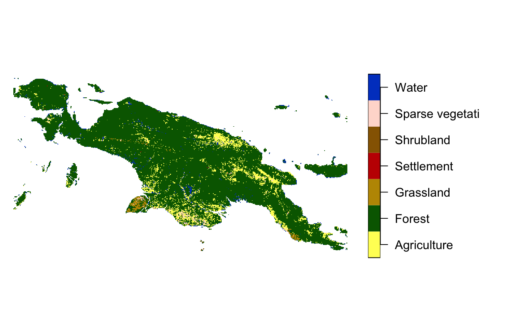
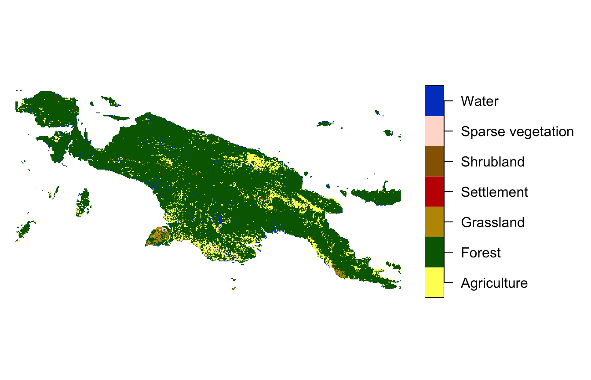
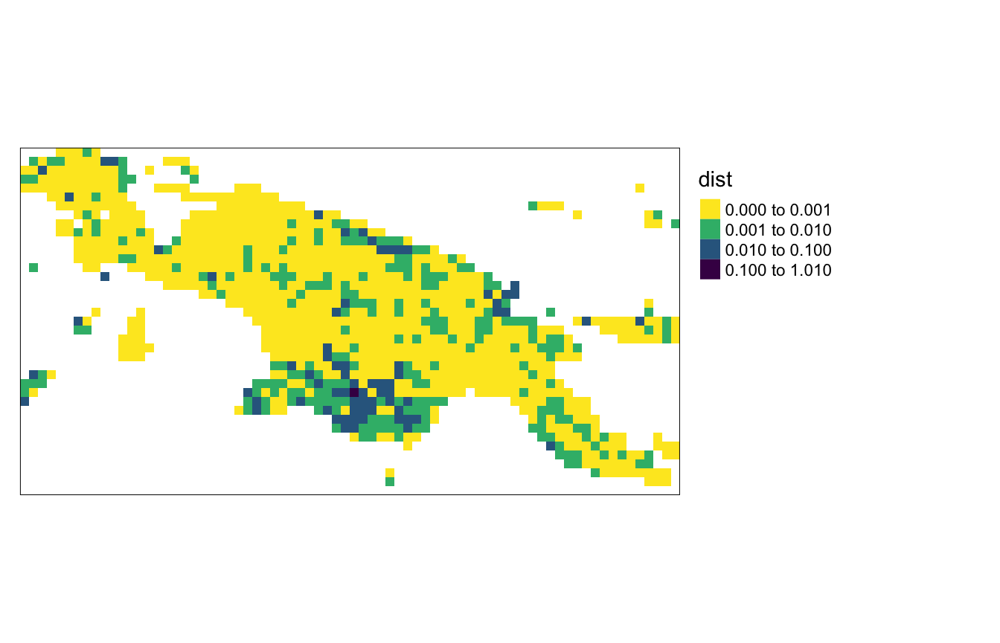
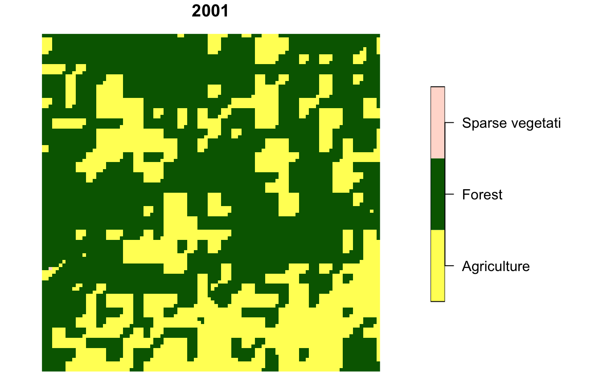
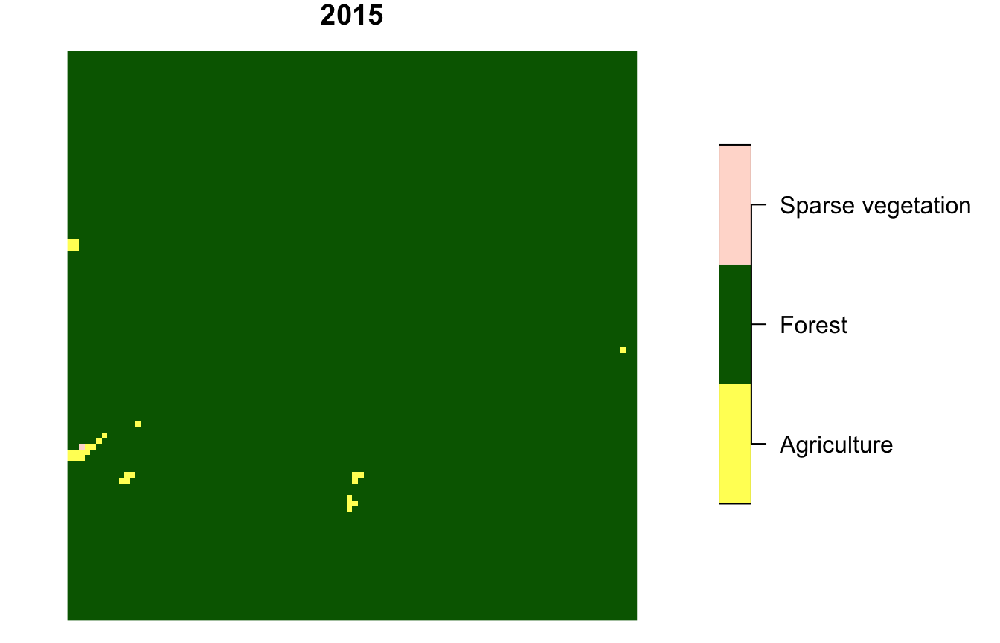
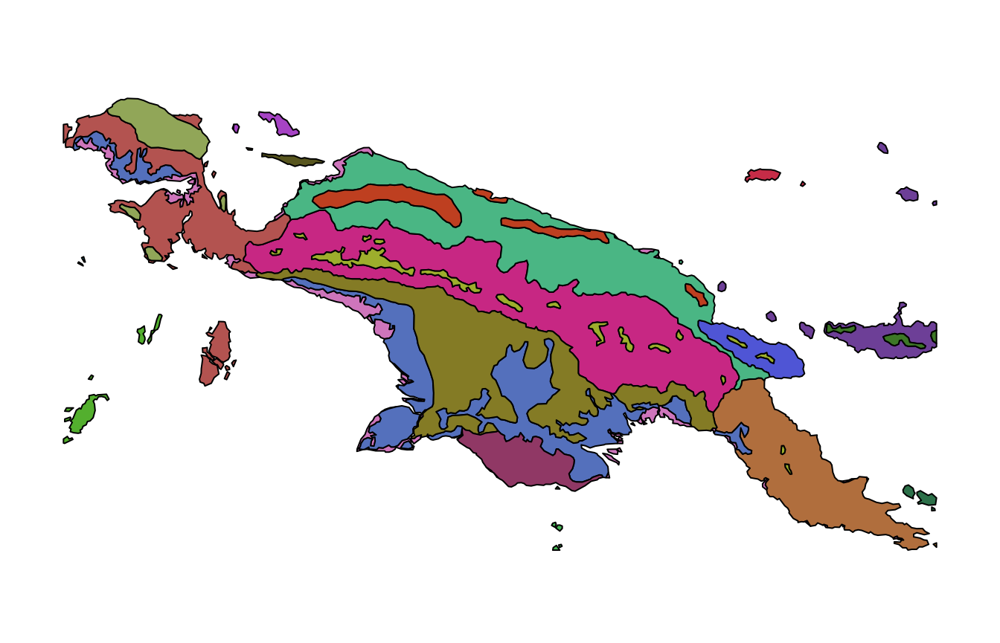
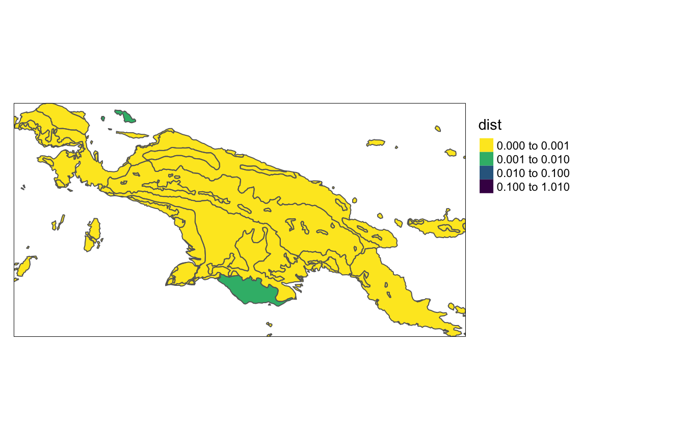
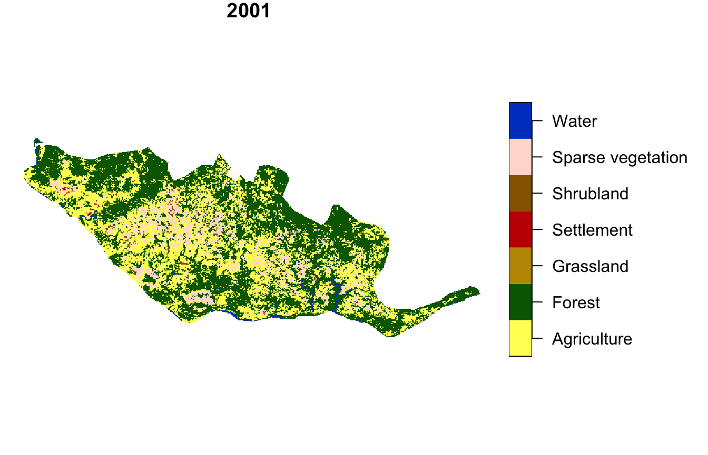
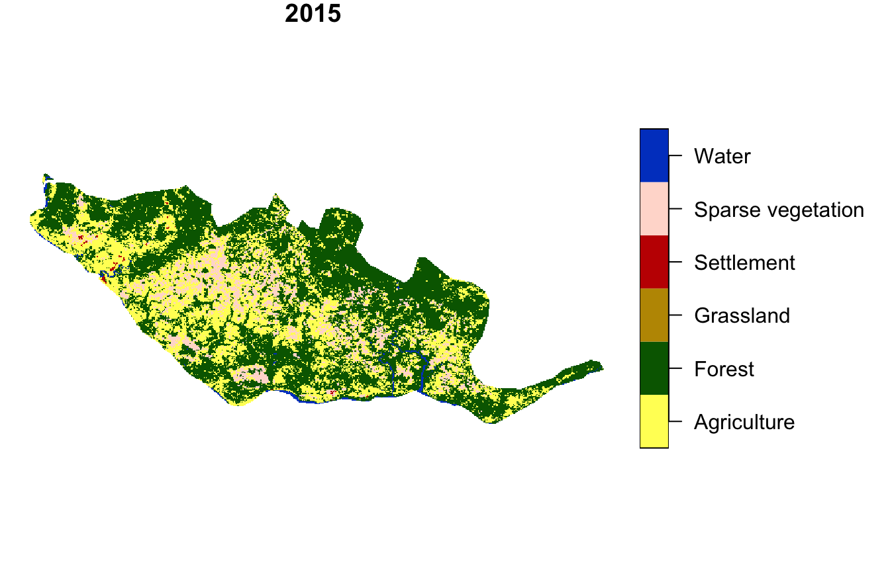

vignettes/articles/v4_compare.Rmd
v4_compare.RmdThe pattern-based spatial analysis makes it possible to compare spatial patterns between two datasets. This vignette shows how to do spatial patterns’ comparison on example datasets. Let’s start by attaching necessary packages:
library(motif)
library(stars)
#> Loading required package: abind
#> Loading required package: sf
#> Linking to GEOS 3.10.2, GDAL 3.4.2, PROJ 7.2.0; sf_use_s2() is TRUE
library(sf)
library(tmap)Spatial patterns’ comparison requires two spatial objects. For this vignette, we read the "raster/landcover2001.tif" and "raster/landcover2015.tif" files.
landcoverold = read_stars(system.file("raster/landcover2001.tif", package = "motif"))
landcover = read_stars(system.file("raster/landcover2015.tif", package = "motif"))The object created based on the first file, landcoverold is a land cover of New Guinea in 2001.
landcoverold = droplevels(landcoverold)
plot(landcoverold, key.pos = 4, key.width = lcm(5), main = NULL)
#> downsample set to 12
The second object, landcover is a land cover of New Guinea in 2015.
landcover = droplevels(landcover)
plot(landcover, key.pos = 4, key.width = lcm(5), main = NULL)
#> downsample set to 12
Our goal here is to find areas with the largest changes of land cover spatial patterns.
Spatial patterns’ comparision can be done using the lsp_compare() function. It expects two spatial objects, a type of spatial signature used ("cove"), distance function to measure dissimilarity (change) between spatial patterns ("dist_fun"). By default the whole area is compared, it can be changed with the window argument. Here, window = 100 means that the study area is be divided into local landscapes of 100 by 100 cells.
compare_1 = lsp_compare(landcover, landcoverold,
type = "cove", dist_fun = "jensen-shannon",
window = 100, threshold = 0.9)
#> Metric: 'jensen-shannon' using unit: 'log2'.The output is a stars object with a dist argument, with the value of 0 indicating no change, and larger values (up to 1) representing changes of a bigger magnitude.
my_breaks = c(0, 0.001, 0.01, 0.1, 1.01)
tm_shape(compare_1) +
tm_raster("dist", breaks = my_breaks, palette = "-viridis") +
tm_layout(legend.outside = TRUE)
Let’s see the local landscape with the largest change in a spatial pattern.
compare_1_max = max(compare_1$dist, na.rm = TRUE)
unique(compare_1$id[which(compare_1$dist == compare_1_max)])
#> [1] 2036Its id is 2036, and its value of change (distance) is about 0.228. We can extract two maps using the lsp_extract() function.
compare_1_2036 = lsp_extract(c(landcoverold, landcover),
window = 100,
id = 2036)Visualization of this local landscape shows that about 1/3 of this area was covered by agriculture in 2001, but has only a few small areas of agriculture in 2015.
compare_1_2036 = droplevels(compare_1_2036)
plot(compare_1_2036[1], main = "2001", key.pos = 4, key.width = lcm(5))

The motif package also allows for the comparing spatial patterns in irregular regions based on the user-provided polygons. It has an example spatial vector dataset, ecoregions.gpkg, which contains terrestrial ecoregions for New Guinea from https://ecoregions2017.appspot.com/.
ecoregions = read_sf(system.file("vector/ecoregions.gpkg", package = "motif"))This dataset has 22 rows, where each row relates to one ecoregion. Each ecoregion is also related to a unique value in the id column.

Comparision of spatial patterns for irregular local landscapes requires setting window = ecoregions["id"].
compare_2 = lsp_compare(landcover, landcoverold,
type = "cove", dist_fun = "jensen-shannon",
window = ecoregions["id"], threshold = 0.9)
#> Metric: 'jensen-shannon' using unit: 'log2'.Spatial patterns of land cover stayed very similar for most of the ecoregions, with just two exceptions:
my_breaks = c(0, 0.001, 0.01, 0.1, 1.01)
tm_shape(compare_2) +
tm_raster("dist", breaks = my_breaks, palette = "-viridis") +
tm_shape(ecoregions) +
tm_borders() +
tm_layout(legend.outside = TRUE)
#> stars object downsampled to 1390 by 720 cells. See tm_shape manual (argument raster.downsample)
Let’s see the ecoregion with the largest change in a spatial pattern.
compare_2_max = max(compare_2$dist, na.rm = TRUE)
unique(compare_2$id[which(compare_2$dist == compare_2_max)])
#> [1] 18Its id is 18, and its value of change (distance) is about 0.006. We can extract two maps using the lsp_extract() function.
compare_2_18 = lsp_extract(c(landcoverold, landcover),
window = ecoregions["id"],
id = 18)The degree of change is distinctly smaller than in the first example above. Now, we can see the change from agriculture to forest mostly in the north-east of the ecoregion.
compare_2_18 = droplevels(compare_2_18)
plot(compare_2_18[1], main = "2001", key.pos = 4, key.width = lcm(5))
#> downsample set to 1
